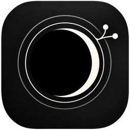
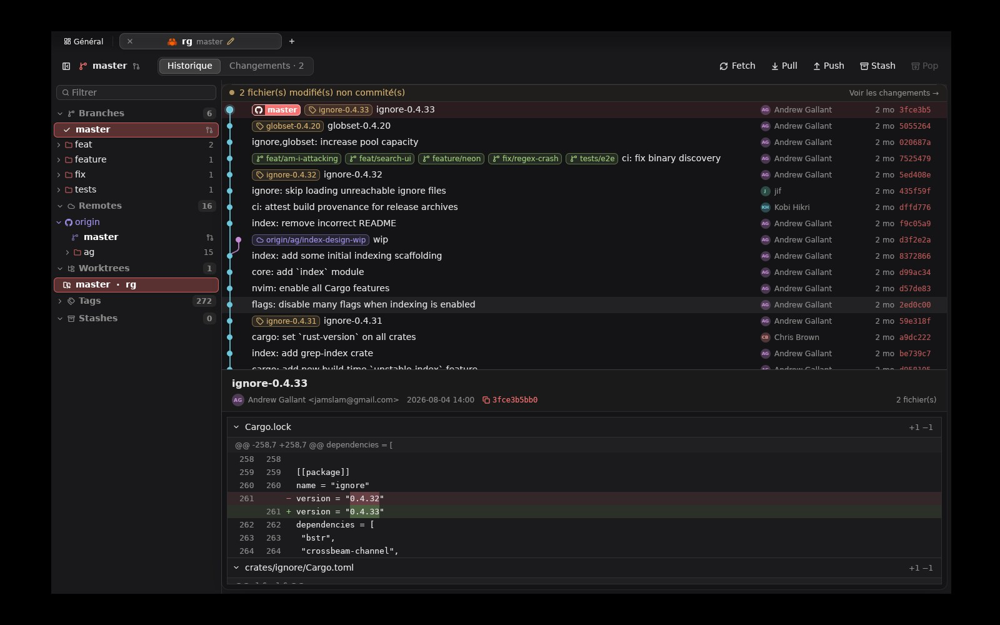

A commit graph that scrolls like a list
Lanes laid out once, rows painted only where you look. 100,000 commits move like 100.

MugetsuA native Git client written in Rust and drawn on the GPU. Fork's density, a colourful graph, and a history that opens before you blink.
Version 0.1 · MIT
macOS · Rust · GPUI
Most Git apps are a list of commits inside a web view: a browser wearing a trench coat, waiting on the command line for every click. Mugetsu is an instrument. Native Rust, drawn by the GPU, every frame earned.
The graph is alive: lanes glide, chips light up, a branch bursts into particles when you check it out. The sidebar is dense like Fork, the graph colourful like GitKraken, and nothing waits. Dark glass, one accent of your choosing, and the keys your hands already know.
The graph is laid out once and painted by the GPU, row by row, only where you are looking. Branch, tag and remote chips sit on the commit they point to; the checked-out branch takes your accent.
Mugetsu's lane is real: on git.git, 85,593 commits read in 0.66 s with a commit-graph, refs in 40 ms, the graph laid out in 13 ms, on four cores, scaled to your count. The other lanes show how those clients read history and keep running until you measure them on your machine; we have not, and we will not make their numbers up.
Settings (⌘,) holds eight accents. Pick one and the HEAD chip, the checked-out branch, the caret, the selection and every primary button change in the same frame. This page follows too, down to the eclipse.
Settings
Each tile below is a real part of the app. Hover one to see it move.
Lanes laid out once, rows painted only where you look. 100,000 commits move like 100.
Every 10 s for the repository in front of you, every 5 min for the rest. A dot pulses on any tab whose remote moved.
A chip coloured by state. Hover it for CI checks, review decision and unresolved threads.
feat/ and fix/ become folders. main, develop and staging stand out. Ahead and behind counts sit beside each branch; worktrees open in a tab.
Syntax highlighting and intra-line changes. Stage by file or by hunk, commit, amend, or commit and push in one keystroke.
Same keys where they exist, so your hands already know the app.
Branches, remotes, tags and commits each have a full menu.
Avatars from GitHub or Gravatar, cached on disk, initials when there is none.
By message, author or SHA, with next and previous match.
Pick a client. The stack between your hand and the screen builds itself. Fewer layers, faster frames.
Facts about the other clients come from their public documentation; numbers on this page are measured on Mugetsu only.

Three crates. mugetsu-git reads history through gix, in process, and calls the git CLI for config, hooks and credentials. mugetsu-forge talks to GitHub. mugetsu-app is the GPUI interface.
Signed builds land on the releases page. This card checks GitHub for you.
Until then, every push to main leaves a zipped app on the CI run, or build it yourself below.
One script builds Mugetsu.app, signs it ad hoc and puts it in /Applications, so it shows up in Launchpad, Spotlight and the Dock. You need a stable Rust and the Xcode Command Line Tools.